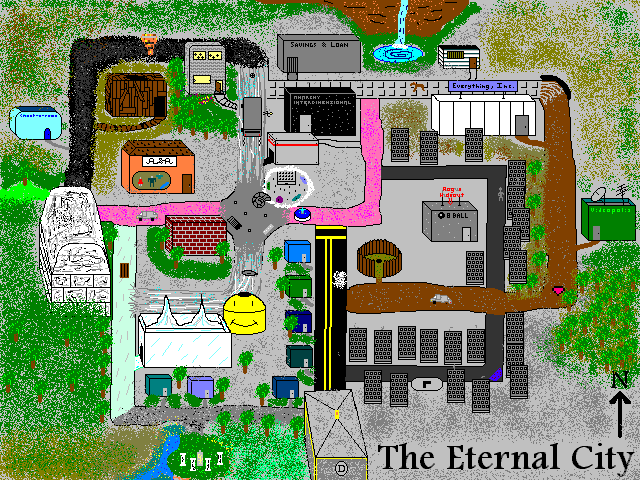

Map by Devo
A MAP OF ETERNAL CITY
? Roads Points of Interest
| ===== ==================
t-t-t-t-e SL PCA a: Dark Alley *: Heart of E.C.
| | | | d: Dimension Drive A: Arena
t-BS BB-e-s-s-s--s--s--o-? e: Eternal Way AAC: A&A Clothiers
| | | | g: Glass Way AI: Anarchy Interdim.
t e AI-l EI-o i: Infinity Way BB: Bed & Breakfast
| | | | l: Limbo Lane BS: Dr.F's Body Shop
SN-t AAC e-G l-a-a-a o-? o: Old Road DTR: Dave's Throne Room
| | | | | | s: Silver Street EB: Eight Ball
?-l-l-l-l-*-l-l-l EB-a o-V t: Tanelorn Road EI: Everything Inc.
| | | | | | | ?: city exit G: Public Garage
TA g L e A-i a o I: Information Center
| | | | | L: E.C. Library
g-e-e-e i-o--o--o--o-? PCA: Paranoid C&A
| | | SL: Eternal S&L
g i a SN: Snak-O-Rama
| | | TA: Temple of the Ages
g i-a--a--a V: Videopolis
| |
?-g-d-d-d-d-i-?
| |
I DTR